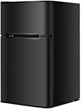

Generic Fridge
Price: $259.99
Pay $21.67/month for 12 months, interest-free upon approval for the Amazon Rewards Visa Card
Color: Black
Black
$259.99
White
$237.99
Color Black
Brand Generic
Form Factor Compact
Adjustable Temperature Control Yes
About this item
❄️【Dual Use: Freezer/Refrigeration Compartment】Our refrigerator has large 2.2 cu. ft. fresh food capacity gives you the space to keep foods organized and 1 cu. ft. freezer capacity give you room to store frozen foods. And the two refrigerator exterior doors allows you to access the freezer or the refrigeration compartment.
🍦【Large Storage Space w/ Compartment】Comes with freezer and refrigerator totally in 90L large capacity, which could hold up a great amount of daily foods. And the door storage offers more vertical space to keeps beverages. Plus, the refrigerator glass shelf can be removed or adjusted if you want to organize taller things.
🍧【Adjustable Thermostat & Interior Light】The upright refrigerator can be adjusted from 7 positions. With the mechanical temperature control, you can set the temperature at the range of 32° to 50°F. The freezing temperature is under 5ºF. With built-in LED light casting a natural light on the food, you can clearly see the contents.
🍨【2 Reverse Door Design w/Integrated Handle】Intelligent reversible door design allows you to install the doors to open to the left or right according to your personal preference or limited space. With built-in handle between 2 doors, it’s easy to open and close the door for greatly user convenience and space saving.
🧊【Compact Design for Various Places】This compact mini refrigerator is perfect for smaller areas such as student dormitories, wet bars, apartments and condos. The freezer work in low noise, providing a quiet and comfortable environment for you. In addition, the adjustable leveling legs also offers much convenience to place the freezer.